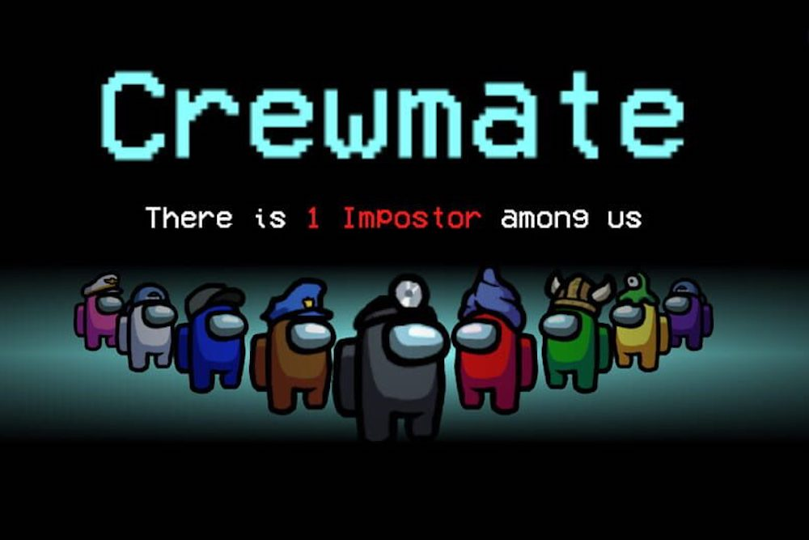
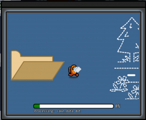
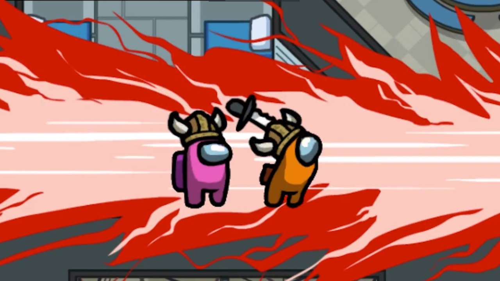
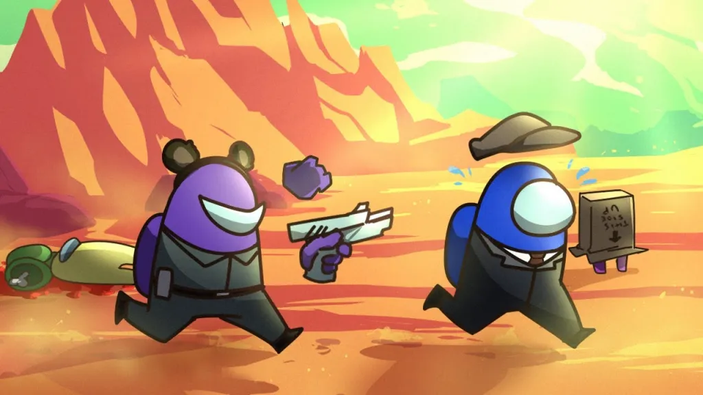
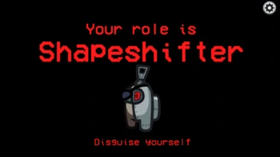
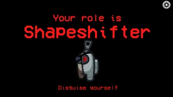

"Crewmate" vai latviski " Apkalpes biedrs"
Tev ir jādara uzdevumi kopā ar saviem Apkalpes Biedriem un izmest vilto Apkalpes Biedru no kosmosa kuģa.
Visiem kopā ir dots skaitlis ar uzdevumiem skatoties cik daudz ir mača autors ielicis.
Ir jadabūn pierādijumi skatoties uz citiem kā tie uzvedās. Tu nevari redzēt kā citi pilda uzdevumus.
Ir pilnīgi atļauts izmest no kosmosa kuģa nevainigos Apkalpes Biedrus, jo visi balso pēc domām.
Visiem Apkalpes Biedriem arī nomirušiem ir jaizpilda visus uzdevumus lai uzvarētu.


Impostor vai "Viltnieks"
Viltnieks ieblendējas ar pārejiem Apkalpes biedriem "pildot uzdevumus".
^ Vai varētu uzskatīt, nav iespējams redzēt ka kāds pilda to uzdevumu izņemot dažus, bet pa tiem pārrunāšu tālak.
Viltnieks var stāvet tur kur uzdevumus VAR sākt pildīt, ir cits uzdevums pa kuru pārejie var uzzināt viena cilvēka neviltību.
Tā saucās Medicīniskā skenēšana, kuru tikai neviltie Apkalpes Biedri var pildīt, un pārejie var redzēt kā skenējas kāds cits.
Viltnieks var galināt pārejos lai uzvarētu, un transportēties pa karti caur ventilāciju ieejot ventilācijas atverē
Skatoties cik daudz Viltnieki ir atļauti vienā spēle, Viltnieks/-i var uzvarēt ja
viens Viltnieks ir atlicies un viens Apkalpes Biedrs, divi Viltnieku un divi Apkalpes Biedri utt.
 

Jaunās lomas
"Shapeshifter"
Shapeshifter ir loma spēlē Starp mums.
Tas ir balstīts uz viltnieka lomu, tāpēc viņu galvenais mērķis paliek nemainīgs: nogalināt pietiekami daudz komandas biedru, lai uzvarētu.
Līdzās standarta spējām, kurām var piekļūt krāpniekiem, Shapeshifters ir papildu iespēja pārveidoties par citiem spēlētājiem.

Jaunās lomas
"Shapeshifter"
Shapeshifter ir loma spēlē Starp mums.
Tas ir balstīts uz viltnieka lomu, tāpēc viņu galvenais mērķis paliek nemainīgs: nogalināt pietiekami daudz komandas biedru, lai uzvarētu.
Līdzās standarta spējām, kurām var piekļūt krāpniekiem, Shapeshifters ir papildu iespēja pārveidoties par citiem spēlētājiem.